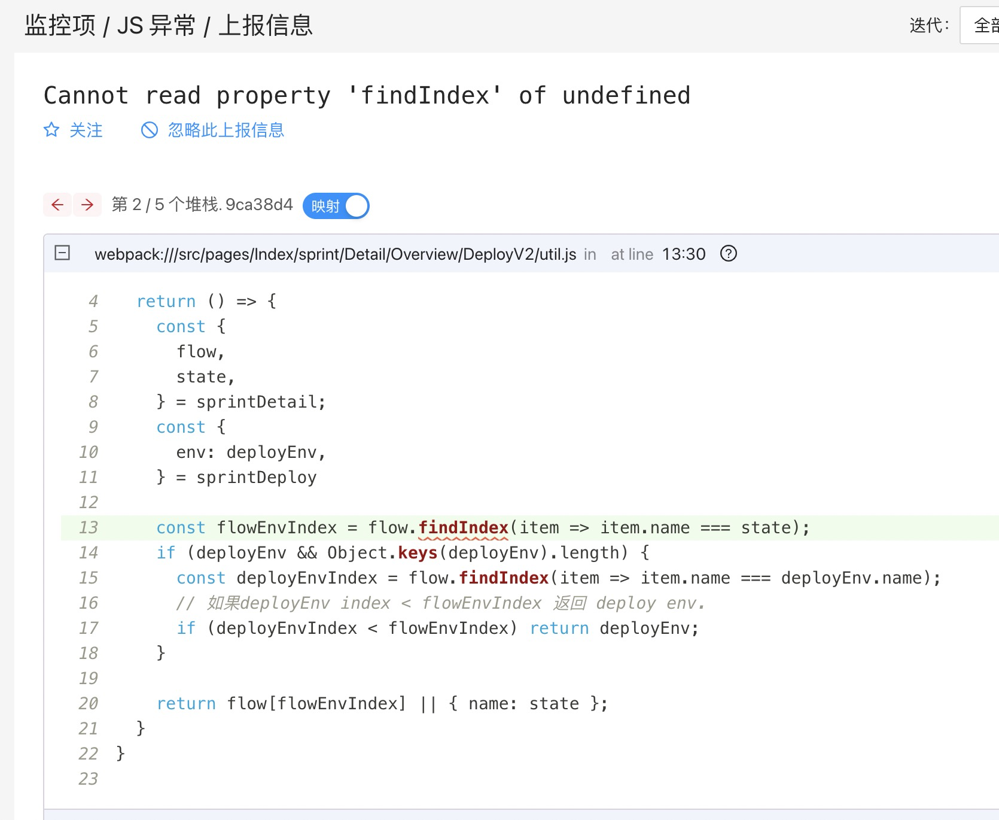
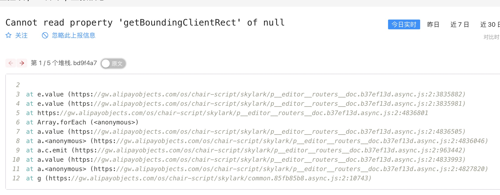
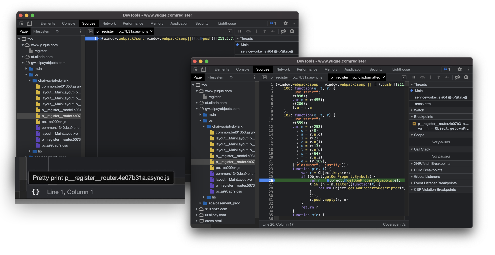
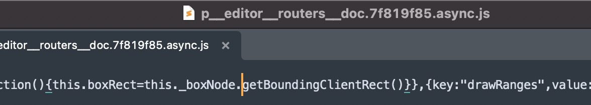
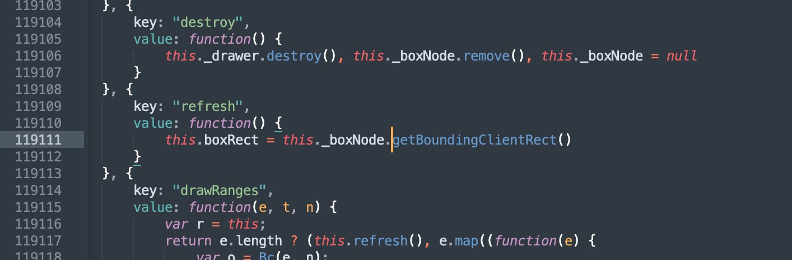
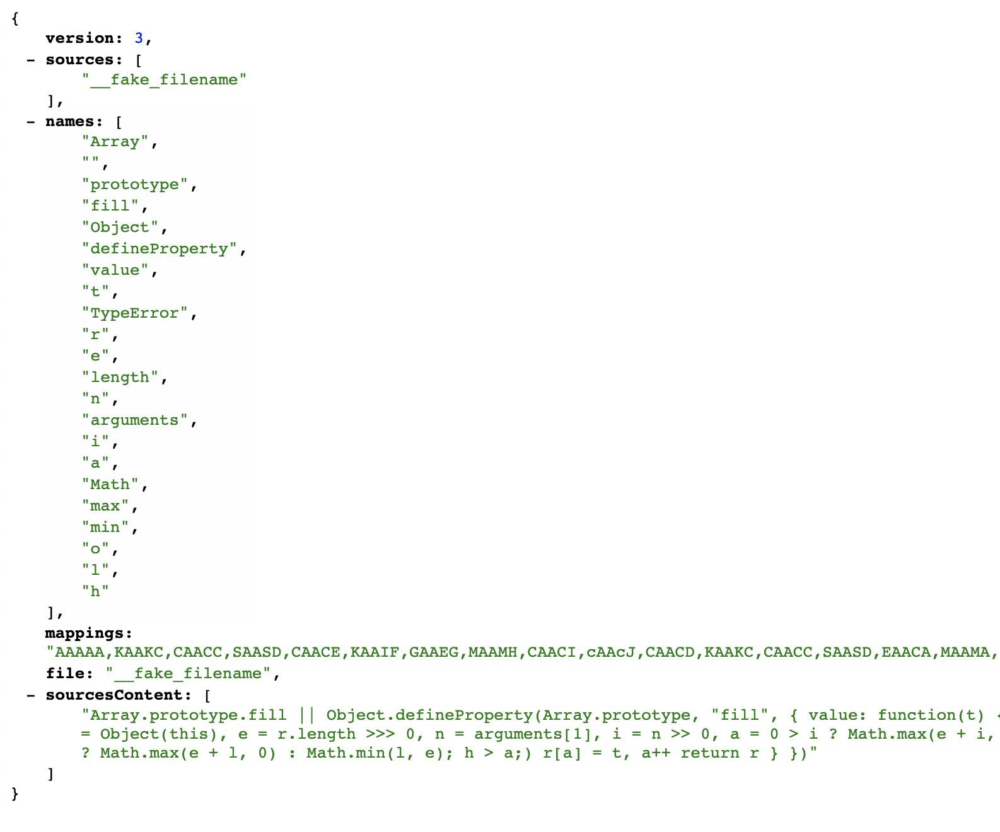
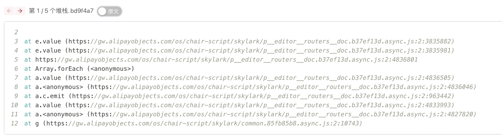
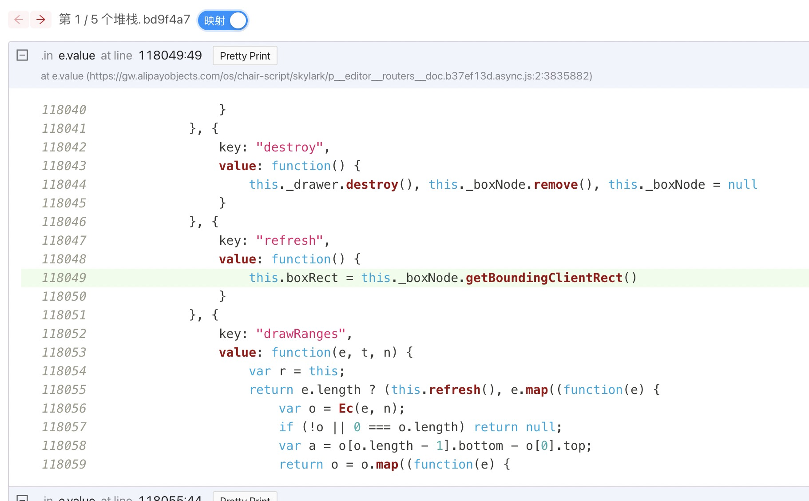

SourceMap 和 Pretty Print
错误堆栈解析一直是雨燕监控的特色功能。在雨燕监控上，打开一个 JS 异常的详情页，雨燕会尝试找到当前堆栈对应的 SourceMap，并尝试反解源码。

但很遗憾，生成 SourceMap 是一个耗时很长的过程，会让构建时间变得很长，再加上诸如 OOM 一类的问题，雨燕上的 SourceMap 生成的成功率并不高。我们经常会看到这样的界面。很无助。

熟悉 Chrome DevTool 的同学可能注意到 Chrome 上有个 「Pretty Print」 功能，可以把压缩混淆过的代码格式化。格式化后的代码虽然变量名仍然被混淆，但是格式相对会友好很多，至少能稍微看得懂。

那么问题来了。这个功能怎么做的。雨燕监控能不能用这样的方式解决问题。
先 Beautify 一下..
以这个报错堆栈为例，第一行 https://gw.alipayobjects.com/os/chair-script/skylark/p__editor__routers__doc.7f819f85.async.js:2:3862046 表示这个错误是在 p__editor_routers_doc.7f819f85.async.js 这个文件的第 2 行，第 3862046 列出现的。那直接把文件请求下来，取 2:3862046 是不是就可以了。
at e.value (https://gw.alipayobjects.com/os/chair-script/skylark/p__editor__routers__doc.7f819f85.async.js:2:3862046)
at e.value (https://gw.alipayobjects.com/os/chair-script/skylark/p__editor__routers__doc.7f819f85.async.js:2:3862145)
at https://gw.alipayobjects.com/os/chair-script/skylark/p__editor__routers__doc.7f819f85.async.js:2:4879956
at Array.forEach (<anonymous>)
at a.value (https://gw.alipayobjects.com/os/chair-script/skylark/p__editor__routers__doc.7f819f85.async.js:2:4879660)
at a.<anonymous> (https://gw.alipayobjects.com/os/chair-script/skylark/p__editor__routers__doc.7f819f85.async.js:2:4879201)
at a.c.emit (https://gw.alipayobjects.com/os/chair-script/skylark/p__editor__routers__doc.7f819f85.async.js:2:909580)
at a.value (https://gw.alipayobjects.com/os/chair-script/skylark/p__editor__routers__doc.7f819f85.async.js:2:4877148)
at a.<anonymous> (https://gw.alipayobjects.com/os/chair-script/skylark/p__editor__routers__doc.7f819f85.async.js:2:4870827)
at g (https://gw.alipayobjects.com/os/chair-script/skylark/common.bef01353.async.js:2:10742)
确实是可行的。但是可读性很差。我们可以把它 beautify 一下，好看多了。

但是又一个问题来了。beautify 之后文件被重新格式化，行和列跟原先对应不上了。报错中的 Line 2, Column 3862046，在 beautify 之后跑到了 Line: 119111, Column: 54 去了。这个对应关系怎么建立？
Beautify 不会改变 AST
回到 Beautify 的原理，在代码反混淆的过程中，JS 本身的语义是不会改变的，也就是 AST 是不变的。所以我们可以尝试通过解析压缩过的代码和 beautify 后的代码的 AST，来建立一个他们之间的 SourceMap，从获得从 Line 2, Column 3862046 到 Line: 119111, Column: 54 的映射关系。
以这份代码为例：
Array.prototype.fill||Object.defineProperty(Array.prototype,"fill",{value:function(t){if(null==this)throw new TypeError("this is null or not defined")
for(var r=Object(this),e=r.length>>>0,n=arguments[1],i=n>>0,a=0>i?Math.max(e+i,0):Math.min(i,e),o=arguments[2],l=void 0===o?e:o>>0,h=0>l?Math.max(e+l,0):Math.min(l,e);h>a;)r[a]=t,a++
return r}})经过 beautify 后的样子是：
Array.prototype.fill || Object.defineProperty(Array.prototype, "fill", {
value: function(t) {
if (null == this) throw new TypeError("this is null or not defined")
for (var r = Object(this), e = r.length >>> 0, n = arguments[1], i = n >> 0, a = 0 > i ? Math.max(e + i, 0) : Math.min(i, e), o = arguments[2], l = void 0 === o ? e : o >> 0, h = 0 > l ? Math.max(e + l, 0) : Math.min(l, e); h > a;) r[a] = t, a++
return r
}
})把他们丢到 https://astexplorer.net/ 看下他们的 AST：
此处原文包含 image 内容。 | 此处原文包含 image 内容。 |
可以发现，除了 location 信息不一致，结构是完全一样的。证明了之前的设想。
通过 AST 建立 SourceMap
SourceMap 的结构这里不赘述了，可以读解阮一峰老师的 JavaScript Source Map 详解 。Mozilla 提供了 mozilla/source-map 这个库，来生成或者消费 SourceMap。
只需要遍历 AST，使用 SourceMapGenerator.prototype.addMapping(mapping) 方法写入映射。就可以生成从 Uglified 到 Beautified 的 SourceMap。
用 https://github.com/acornjs/acorn 库来解析。伪代码描述如下
uglify = 压缩过的源码
beauty = 用 beautify-js 美化(uglify)
uglifyTokenizer = acorn.tokenizer(uglify);
beautyTokenizer = acorn.tokenizer(beauty);
sourceMapGenerator = new SourceMapGenerator({ file });
while true:
// 因为两者的 AST 是完全一致的，所以同步消费
uglifyToken = uglifyTokenizer.getToken();
distToken = beautyTokenizer.getToken();
if (eof uglifyToken) {
break;
}
sourceMapGenerator.addMapping({
source: 'MOCK一个',
name: uglifyToken.name,
original: uglifyToken.loc.start,
generated: distToken.loc.start,
});
// 把美化过的代码当成源码原文塞进去
generator.setSourceContent(source, beauty);可以生成这样一份 SourceMap： 
然后就可以用这份 SourceMap 来找到从压缩后的代码的行列好到美化过的代码的行列数的映射关系了。
const staticConsumer = await new sourceMap.SourceMapConsumer('上面生成这份');
// 获取对应行号
const loc = staticConsumer.originalPositionFor({ line: 10, column: 8135 });
// loc = { source: 'MOCK一个', line: 14394, column: 34 };
// 拿之前注入进去的 beautify 后的内容
const sourceContent = staticConsumer.sourceContentFor(loc.source);
const startLine = Math.max(loc.line! - topOffset, 0);
const endLine = loc.line! + bottomOffset;
// 就能拿到前后 Offset 的内容了
const sliceSrcContent = sourceContent.split('\n').slice(startLine, endLine).join('\n');
看下效果
堆栈：

解析结果：

虽然跟真正的源码还有比较大的差距，但是熟悉的同学应该能比较快的找到问题出在哪了……
优化与复用结果
很显然，每次都经过 Beautify -> 遍历 AST -> 生成 SourceMap 的过程是不经济的。解析比较大的文件会耗费很长的时间。以语雀为例，对语雀的 p__editor__routers__doc.js 文件做一遍上述操作需要耗时 90秒。显然，无论是放在客户端还是服务端做，这个耗时都是不可接受的。所以我们选择使用函数计算来跑这个任务。
又因为同一个 JS 文件所产出的美化结果是不变的，所以我们会把上面生成的 SourceMap 缓存起来。后续再请求的时候直接消费就可以了。